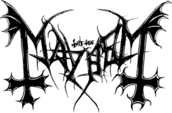

Origem:¯\_(ツ)_/¯ .
Mayhem é uma banda de black metal fundada no ano de 1984 em Olso, Noruega.O nome Mayhem surgiu da canção "Mayhem With Mercy", encontrada no álbum "Welcome to Hell" (1981) da banda britânica Venom. A banda ganhou grande repercussão pelo mundo após acontecimentos polêmicos em sua carreira, como suas performances violentas nos shows, o suicídio do vocalista Dead e o assassinato do guitarrista Euronymous pelo antigo integrante Varg Vikernes, do Burzum.
O grupo lançou o influente EP chamado Deathcrush e acumulou um público fiel através de esporádicas e notórias performances ao vivo, atraindo mais atenção por suas ligações a uma série de incêndios a igrejas norueguesas e por violentos incidentes que os cercaram. Eles separaram-se após o assassinato de Euronymous, pouco antes do lançamento de seu disco de estreia intitulado De Mysteriis Dom Sathanas , considerado um clássico gênero black metal. Os membros restantes do grupo, Hellhammer (bateria) e Necrobutcher (baixo), juntaram-se ao vocalista Maniac e ao guitarrista Blasphemer e reativaram o Mayhem dois anos após o ocorrido. Atualmente a banda é composta por Hellhammer, Necrobutcher, Attila Csihar (vocal), Teloch e Ghul (guitarras).
Considerado o grande precursor do gênero, o Mayhem influenciou fortemente todo o black metal e foi fundamental para a evolução do metal extremo mundial. Seus trabalhos pós-Euronymous são caracterizados por implementar várias experimentações. O disco Ordo Ad Chao , de 2007, recebeu o prêmio Spellemannprisen na categoria "melhor álbum de metal".
Índice
- História
- Quando estão todos a morrer
- Já ninguém se importa com isto porquê que a banda ainda não acabou?
Membros
- Quem é importante
- Outros
Discografia
Melhores páginas de memes
Ligações externas
História
Mayhem foi formado por um grupo de adolescentes que levaram toda a estética de “Senhor dos Anéis” e “D&D” misturada com góticos demasiado depressivos e um odio demasiado grande pelo Cristianismo (ou uma amor muito grande pelo “paganismo“ apesar de só usarem isso como desculpa por crimes, já que dizer que és satanista só é socialmente aceite se estiveres a comer um Sundae de Chocolate do McDonalds ).
Quando estão todos a morrer
O Mayhem foi fundado em 1984 pelo guitarrista Euronymous, o baixista Necrobutcher e o baterista Manheim. A banda começou a carreira fazendo covers (como todas as bandas que acabam por tocar as músicas mais populares de bandas de rock e metal para um monte de velhos bêbados em bares), e depois gravaram sua primeira demo (que nunca ninguém ouviu falar sequer).
Mais tarde eles gravaram o EP Deathcrush mas as pessoas só se intressam pela versão que foi lançada em 93.
A partir de 88 chegaram a banda dois novos membros, o vocalista Dead e o baterista Hellhammer.
Dead morava na suécia, mas sabendo que o Mayhem procurava um novo vocalista, mudou-se e enviou um envelope com uma fita cassete, um porquinho-da-índia (era um rato, a Wikipédia está mal a história do porquinho da índia é outra, sim o Dead tinha um problema com roedores) em decomposição e uma carta que dizia estar buscando uma banda. O envelope chamou a atenção dos membros da banda e ele foi aceito na banda.
Com Dead os concertos da banda tornaram se lendários . No início de sua carreira ele era conhecido por usar"corpse paint", que era uma maquiagem preta e branca que o deixava parecido com um cadáver (ou um panda que foi rejeitado pela própria família).
Para completar seu visual, Dead enterrava as suas roupas para depois usá-las em palco.
Durante as apresentações, Dead costumava cortar-se com facas e cacos de vidro. Além disso, muitas vezes a banda colocava cabeças de porcos e ovelhas empaladas em estacas na frente do palco mesmo assim depois queixavam-se que não tinham grande dinheiro e que passavam certas dificuldades.
Dead chegou mesmo em um concerto a ser hospitalizado pela perda excessiva de sangue por se cortar muito profundamente.
Em 1990 a banda mudou para uma velha casa na floresta, para escrever as canções para seu novo álbum. Mas ao começarem a viver juntos, Dead e Euronymous acabaram por se desentender chegando mesmo a um dia que Dead foi dormir na floresta,já que, Euronymous tinha colocado música sintetizada a tocar mesmo sabendo que era algo que Dead odiava, Euronymous, então, saiu da casa e começou a atirar no ar com uma espingarda.
Em 8 de abril de 1991, Dead cometeu suicídio na casa da banda. Ele foi encontrado por Euronymous com os pulsos cortados e um tiro de espingarda na cabeça e perto de um bilhete onde pediu desculpas pelo sangue e por ter atirado dentro de casa. Em vez de chamar a polícia, Euronymous comprou uma máquina para fotografar o cadáver depois de reorganizar algumas coisas.
Apesar de o suicídio de Dead não ter surpreendido ninguém, já que este era obcecado pela morte desde muito jovem, acabou por ser usado por Euronymous para gerar uma imagem sombria para o Mayhem chegando a declarar que na verdade o Dead matou se porque o black metal tinha se tornado apenas uma "modinha" e muito comercial. Na época, surgiram boatos de que Euronymous teria comido pedações do cérebro de Dead e tinha feito colares com pedaços de seu crânio. Posteriormente a banda negou os boatos.
Além da morte de Dead, o Mayhem foi protagonista de várias das histórias mais polemicas do Black Metal, e do Rock/Metal. Primeiramente, o Mayhem foi a banda mais importantes do Inner Circle, um pequeno clubezinho secreto de adolescentes e jovens adultos que se sentiam extremamente reprimido pelas suas famílias cristãs que no fundo pagavam tudo o que eles percisavam e queriam mesmo eliminar o cristianismo da Noruega. Porém, não passou de ideias intelectuais, o máximo que conseguiram foi queimarem diversas igrejas, inclusive algumas históricas, resultando em mais de 50 igrejas queimadas ou danificadas por membros do grupo.
Euronymous chamou Varg Vikernes para o baixo, Snorre para a segunda guitarra e Attila Csihar para os vocais, e assim iniciaram as gravações de De Mysteriis Dom Sathanas. Para coincidir com o lançamento do álbum, Euronymous e Vikernes planejaram explodir a Catedral de Nidaros, a qual aparece na capa do CD, mas isso nunca chegou a acontecer.
No meio das gravações, surgia uma grande tensão entre Varg e Euronymous o que resultou no assassinato de Euronymous por Varg em 10 de agosto de 1993. Após um confronto entre os dois, Varg acabou esfaqueando Euronymous e matando-o, Vikernes alega que Euronymous atacou-o primeiro e que na verdade o assasinato foi autodefesa (apesar de que atualmemte é raticamente um consenso de que este foi um crime passional). Vikernes foi preso em alguns dias, e em alguns meses foi sentenciado a 21 anos de prisão tanto pelo homicídio quanto pelos incêndios a igrejas.
Em Maio de 1994, De Mysteriis Dom Sathanas foi lançado e dedicado a Euronymous. O seu lançamento foi adiado devido a queixas dos pais de Euronymous, que se opuseram a presença das linhas de baixo gravadas por Varg Vikernes(mas foi totalmente ok a capa com o corpo do Dead xd). Supostamente Hellhammer assegurou aos pais de Euronymous que ele mesmo iria regravar o baixo, mas acabou por não fazer alterações.
Já ninguém se importa com isto porquê que a banda ainda não acabou?
Depois de toda a gente importante ter morrido ninguém sabe ao certo (ou simplesmente não querem saber) o que aconteceu a banda, a única coisa que todos conhecem depois disso tudo é a publicação do álbum The Dawn of the Black Hearts mas não pela qualidade da música na verdade mas sim devido a polémica capa.
Com o fim da época de ouro do Mayhem começou também a diminuir o movimento do black metal, sendo que no dia de hoje só sobrou dentro do movimento um monte de amantes de pés.
No fundo parte da fama atual da banda é através das páginas de memes de adolescentes e jovens adultos fãs igeiramente loucos e esquizofrénicosque não tem nada para fazer e acabam por fazer memes sobre a história das bandas ou simplesmente fazem cyberbullying e espalham ódiopara o Varg.
Sendo que este também não se ajuda a sí próprio, tendo recentemente decidido insultar o Brasil o que resultou na maior onda de cyberbullying contra ele próprio que existiu.
Este continua por ai a falar mal do Euronymous e a espalhar o típico ódio de projeto de Nazi.
A banda voltou a ser tema de conversa no final de 2019 quando Necrobutcher afirmou que este também planeava matar Euronymous, no fundo foi apenas uma tentativa de chamar atenção para o novo álbum da banda, Daemon (que no fundo é o melhor álbum que a banda conseguiu em anos), mas acabou por simplesmente fazer com que se tornasse alvo de piadas e memes.
Membros
Mayhem é uma banda que pode dividir os seus membros de várias maneiras, desde os mais relevantes até aqueles que se morressem a própria família só notaria a sua falta 3 anos depois, os membros da sua “fase de ouro” até aqueles que ninguém sabe o nome ou até mesmo aqueles que estão vivos e aqueles que estão mortos não apenas poeticamente.
Quem é importante
Sendo sincera poucos.
- Euronymous - guitarra (1984–1993), vocal (1984–1986)
Outos
- Teloch - guitarra (2011-presente) e Ghul - guitarra (2012-presente)
- Messiah - vocal (1986-1987)
- Manheim - bateria, percussão (1984–1988)
- Blasphemer - guitarra, baixo (1995–2008)
- Torben Grue - bateria, percussão (1988)
- Maniac - vocal (1987, 1995–2004)
- Kittil Kittilsen - vocal (1988)
- Occultus - vocal, baixo (1991)
- Blackthorn - guitarra (1992–1993)
Discografia
Melhores páginas de memes
Ligações externas
Não existem ligações externas, era tudo um monte de seres anti sociais.
{kind=link}
{kind=link}
{kind=link}
{kind=link}
{kind=link}
{kind=link}
{kind=link}
{kind=link}
{kind=link}